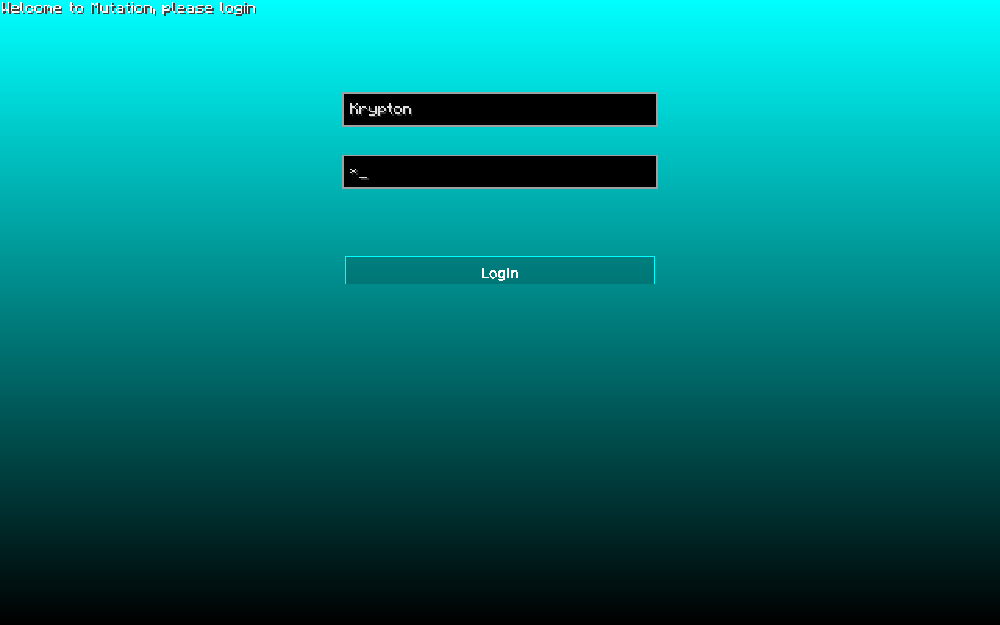

🔒 How I protected my Minecraft cheating client
So for those of you who know me for quite a long time, they know I’ve been cheating in Minecraft for quite some time. Yes, I cheated in a block game. But I didn’t just installed a Minecraft cheating client, went on a server and killed everyone, I made my own cheating client. Now this might sound even more cringe, but it taught me a lot, especially a lot about Java.
🧑💻 Cheating client
So before I explain how I implemented some protection to my, never released nor finished, client I would like to explain how a cheating client works.
When you first want to make a client you need to know what you will have to code and where. The answer is pretty simple: You add your own code to the official Minecraft client. You may not know but, there is the Minecraft Coder Pack publicly available which gives anyone access to the source code of Minecraft itself.
So now that we know where to code, we need to know how and what to code. The answer to the how question is very simple as Minecraft is coded in Java, it leaves you pretty much one possibility: You need to code your client in a programming language with JVM, the most popular ones are Kotlin and Java of course. For it to be easier as I had some small knowledge in Java, I decided to go for Java. Now comes the question to what to code. Again very simple as there are components that most cheating clients have:
- Click GUI
- Commands
- Events
- Keybindings
- Modules
Once this is known, we can start to code the client. Once you’ve finished it, you can either you make it public, paid or completely private. Depending on what you choose you will require different type of protection. I wanted to go for a paid private client, but this project never came to a conclusion.
However, I am quite happy looking back at the different security layers I’ve implemented, which are definitely not the best. But the past me of 5 years ago was proud of :) Of course, all of these can be bypassed and many other things can be done, but again; I was happy I did this :)
🔐 Login
My password was 'a' :DOne of the most used and known protection is to set up a login method. Of course for that you need a web server, as you don’t want to hard code the credentials inside your client. So I created some simple PHP files to handle the different types of logins I’ve decided to implement.
Username & password
This was the first method I’ve implemented. The only thing I had to do was to create a login endpoint to my website and let the users login with their username and password from the client. The client would then send the username and password to the server via the headers and the server would check if the credentials are correct. The server would then return a JSON object as response to say whether the given credentials were correct or not. The JSON object would look like this:
1 | { |
Most of the fields, such as role or username were just so that it could later be used directly within the client and display such information for example on the main menu as you’ve seen above. The access_token is the token that is used to authenticate the user for configurations and other things to download that are only accessible for this user.
Token
As shown on the JSON object above, a access_token field is given in the response. This token is used not only for downloading configurations or also for other things, but this token is then later saved on the local machine and used for automatic login, so that you don’t need to always give in your username and password. This was a “Remember me” option. So the login method using the token was much easier and user-friendly.
To reset that token you simply had to change your password, and then you would have to log in again to get the new access token overwritten into the local machine.
💽 Hardware identification (HWID)
Of course a simple login with username and password are not always the best option, that’s where I started to use hardware identification to make sure the correct user is logging in. The HWID is calculated based on different hardware components, which then gives a unique ID for each machine. Of course this HWID can be easily spoofed, but it was a simple check that costs not a lot of time to implement and can only do good things. For each request made from the client there was also this HWID of the user sent to the server. The server would then check if the HWID is correct and if so, it would return the different JSON as shown above. A HWID looks like this:
1 | 111919518612-1211951819-1111919518612-1-1-1-1-1-1-11313-11519-124 |
I’ve made a basic repository public about how to get such an HWID easily. Of course the method I’ve implemented into my client was slightly different from the public repository, but it’s still pretty simple.
This was another simple way to make sure the right person was logging to the right user and sharing accounts.
💀 Kill switch
The kill switch was the last security layer I’ve implemented. It was very basic and useful in case I wanted to prevent anyone from logging in. Once every, for example, 5 minutes the client make a simple web request to the kill switch endpoint to make sure the kill switch is not activated. If it was activated, then the client would automatically log out and shut down Minecraft. It was something very simple that I could edit at any time. The JSON object that was being returned was very simple:
1 | { |
㊙️ Obfuscation
Obfuscating my client would’ve been the last securiy I could’ve implemented when releasing it. Since I never released this client, I’ve never really did it. However, I can explain how this works!
In simple words you turn your code unreadable for humans, but still executable and fully working. Some example of so called obfuscators is ProGuard.
Here would be the short version of an obfuscated “Hello world” program from this obfuscator, to get the full result you can check this link.
1 | public class HelloWorld { |
I think you get the idea of what an obfuscator does :)
📜 Conclusion
This was pretty much how my client was designed. I’ve made it as simple as possible, so that it can be used by everyone. I was very happy about the result back then, but I’ve never released my client to the public. It was a great time working on this project but everything comes to an end right?
Maybe I will come back one day in coding such a client, or maybe a normal legit client, who knows :D